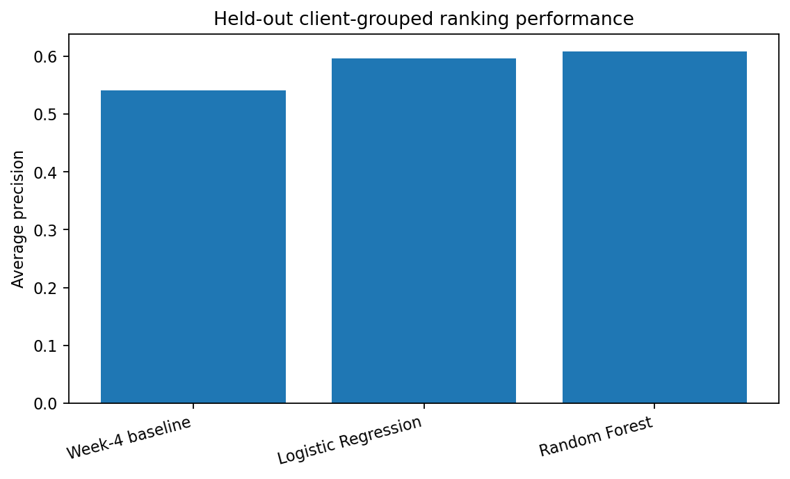
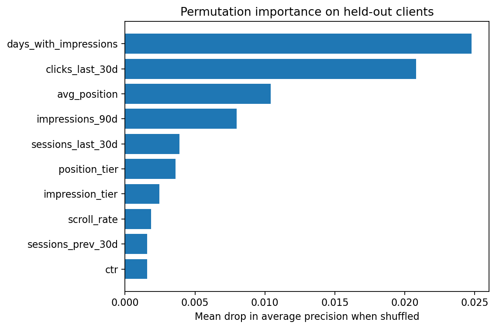
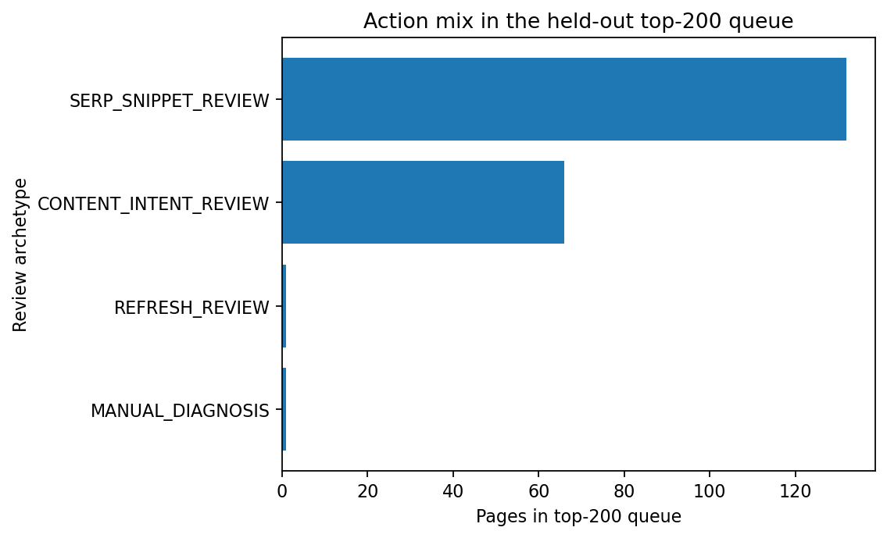

This capstone asks a practical ranking question: which pseudonymized content pages should an SEO specialist review first when the available snapshot signals resemble pages with an observed decline? I use a 30,000-row anonymized content dataset and define the observed outcome as trend_direction == "down". A Random Forest is compared with Logistic Regression and a transparent rule baseline on the same 75/25 client-grouped holdout, while direct label-derived fields and identifiers are excluded from model features. On unseen clients, the Random Forest reaches average precision (AP) 0.608 and ROC AUC 0.623, compared with AP 0.541 and ROC AUC 0.530 for the rule baseline; a deliberately naïve random-row audit reaches AP 0.807, showing how much validation design can inflate the apparent result. The model is used only as directional decision-support: it prioritizes human review and attaches transparent reason codes, but it does not diagnose causes, guarantee future decline, or estimate the effect of an edit.
The decision this project supports is operational: which content pages should an SEO specialist review first when review capacity is limited? The unit of analysis is one pseudonymized content page. The output is a ranking score and a review queue — not an automatic content change.
A reviewer uses the queue to decide where to spend attention first, then checks the actual page and search context before acting. A false positive wastes review time and can encourage an unnecessary edit; a false negative delays review of a page that is experiencing an observed decline. Because an unnecessary intervention can itself be harmful, the workflow intentionally keeps the final decision with a human.
ML is useful here because no single allowed signal is a reliable diagnosis on its own. The task is to combine many weak search, traffic, content, freshness, and engagement signals into a consistent triage order, while keeping claim boundaries explicit.
The project uses the anonymized FlyRank content-refresh release: 30,000 rows, 44 columns, 32 pseudonymous clients. It contains page-level content descriptors, search-visibility summaries, traffic/engagement summaries, freshness fields, and rolling measurement windows. The release does not expose calendar dates; the analysis works with the supplied 90-day aggregates and adjacent 30-day windows.
The observed binary target is trend_direction == "down" (base rate ≈ 0.542 overall, 0.517 on the held-out test clients). The following fields are deliberately excluded from the feature matrix:
trend_direction — the target itselftrend_pct — the direct numeric source of the targetimpressions_last_30d and impressions_prev_30d — together they reconstruct the trend calculation (a leakage audit reconstructs trend_pct from these two windows with correlation ≈ 1.0, mean absolute error ≈ 0.022 — near-perfect leakage)content_id and client_id — identifiers, not predictive features. client_id is used only to define the grouped train/test split.After exclusions, the model uses the remaining 38 features spanning search economics, content descriptors, 90-day traffic/engagement totals, freshness, and derived tiers. The public artifacts (this page, the report, the exported queue) contain no client names, URLs, or raw/private queries; the operational queue retains only a pseudonymized content_id.
This is framed as a binary ranking problem, not an autonomous classification system. A page is positive when its observed trend_direction equals down; the operational goal is to place more positive pages near the top of a finite human-review queue.
The transparent baseline is the Week-4 priority rule, rebuilt on the same train/test split as the learned models. It combines a CTR gap (observed CTR below the training-derived median CTR for the page's average-position bucket) with 90-day impression opportunity, via 0.65 × CTR-gap percentile + 0.35 × impression percentile. Both reference distributions are learned only from training rows, so the baseline sees the same held-out rows as the learned models without peeking at test outcomes.
Two learned models are compared against the baseline: Logistic Regression (a readable linear probability ranker) and Random Forest (a nonlinear comparison, 250 trees, class_weight="balanced_subsample"). Numeric features receive median imputation, missingness indicators, and standardization; categorical features receive most-frequent imputation and one-hot encoding with unseen categories ignored at test time. All random seeds are fixed at 42.
The primary evaluation is a single reproducible 75/25 holdout grouped by client_id: 22,885 training rows from 24 clients and 7,115 test rows from 8 completely unseen clients, with zero client overlap (verified by set-disjointness assertion in the notebook). This matters because pages from one client can share site-level patterns, tracking conventions, or content systems — a random row split would let the same client appear on both sides of the split and implicitly answer an easier question. To make that concrete, the same Random Forest design is also evaluated under a naïve random row split as a validation audit (see §4).
All three methods below are evaluated on the exact same held-out clients.
| Method | Average precision | ROC AUC | Precision@20 | Precision@50 |
|---|---|---|---|---|
| Random Forest | 0.608 | 0.623 | 0.60 | 0.66 |
| Logistic Regression | 0.596 | 0.599 | 0.95 | 0.68 |
| Week-4 baseline | 0.541 | 0.530 | 0.70 | 0.74 |
The Random Forest has the strongest overall AP, improving AP by about 0.067 absolute over the rule baseline. Logistic Regression is close on AP and has notably higher precision@20, while the hand-built rule remains competitive at precision@50 — useful negative evidence against the idea that more model complexity automatically produces a better operational queue on every metric.

This is the most important result for claim strength. The same Random Forest design reaches AP 0.807 / ROC AUC 0.793 under a naïve random-row split, but only AP 0.608 / ROC AUC 0.623 under the client-grouped split — an AP drop of roughly 0.20 absolute. That gap is direct evidence that random-row validation would substantially overstate this model's transfer to unseen clients, which is why the client-grouped design is used as the paper's primary and only reported operating result.
The ranking is not a diagnosis. Within the top-50 of the held-out queue, some pages receive high scores despite an observed label that is not "down," and conversely some observed declines receive scores near the bottom. This is an expected consequence of excluding the two directly leaking impression windows: the model must rank on weaker, non-leaking evidence. The failure pattern suggests two practical cautions — pages can look similar in the allowed snapshot features while differing in unobserved query mix, seasonality, or SERP changes; and a genuine decline can occur without a strong warning signal in the allowed features. Honest validation is meant to surface these misses, not remove them by leaking the answer.
Permutation importance on the untouched grouped test split shows the largest average-precision drops when the following features are shuffled:
| Feature | Mean AP drop |
|---|---|
days_with_impressions | 0.0248 |
clicks_last_30d | 0.0208 |
avg_position | 0.0104 |
impressions_90d | 0.0080 |
sessions_last_30d | 0.0039 |
position_tier | 0.0036 |
impression_tier | 0.0025 |
scroll_rate | 0.0019 |
sessions_prev_30d | 0.0016 |
ctr | 0.0016 |

Search exposure, recent click/session activity, and ranking position carry the strongest predictive association in this model — this is association, not an established causal lever. A feature can help rank pages because it correlates with the observed outcome without being something an editor should directly optimize. The model does not establish that increasing days_with_impressions, changing position, or changing any other feature would cause recovery.
On a held-out client-grouped split, the model provides a measured ranking signal for pages associated with an observed decline. This result suggests the signal is useful as directional decision-support to prioritize human review, together with transparent non-leaking reason codes and review archetypes. The playbook does not automate edits, diagnose causes, or claim that a recommended intervention will improve performance, and it does not predict or explain Google's ranking algorithm.
This work does not establish causality, does not provide a fully time-forward forecast (the target is built from adjacent recent windows within a single snapshot, not a prospective trial), does not measure the treatment effect of any recommended action, and does not guarantee performance for clients outside the evaluated population. Other limitations: the client mix is limited to 32 pseudonymous clients (8 held out), the snapshot features may omit seasonality, query-mix shifts, or SERP layout changes, and the review archetypes are suggestions for a human, not measured interventions. Results should be treated as evidence for prioritization, not as an automated SEO decision engine.
The output is intended for use as a human-review priority queue. The model score answers where to look first; transparent reason codes then describe which non-leaking, visible signals make a particular review archetype plausible — they do not prove what is wrong.
| Review archetype | Pages in top-200 queue |
|---|---|
SERP_SNIPPET_REVIEW | 132 |
CONTENT_INTENT_REVIEW | 66 |
MANUAL_DIAGNOSIS | 1 |
REFRESH_REVIEW | 1 |

Every row in the queue requires human review before any action is taken. The system should not automatically rewrite, delete, redirect, deindex, or merge a page. It should not change legal, pricing, compliance, or brand-sensitive copy from a model score alone. It should not be used to infer that the score caused a decline, or to claim an expected lift/ROI, without a proper intervention experiment or another causal design.
The queue should be re-audited when: grouped-validation AP falls by more than 0.10 absolute from the current 0.608 anchor; the median model score shifts by more than 0.10 absolute; a core feature's new median leaves the current held-out interquartile range; or target construction, tracking definitions, schema, or content taxonomy changes. A data-quality failure should be investigated before retraining — retraining should not be used to hide a broken pipeline.
The capstone notebook regenerates the model comparison, leakage checks, error examples, top-200 queue, JSON metrics, CSV tables, and the three figures on this page. From a fresh clone of the repository:
python -m venv .venv
source .venv/bin/activate # Windows: .venv\Scripts\activate
pip install pandas numpy scikit-learn matplotlib jupyter nbconvert
jupyter nbconvert --to notebook --execute work/notebooks/capstone.ipynb \
--output capstone.executed.ipynb --ExecutePreprocessor.timeout=600Random seed: 42, fixed for every model and split. Key reproducibility artifacts: work/notebooks/capstone.ipynb, work/outputs/capstone_metrics.json, work/outputs/capstone_model_comparison.csv, work/outputs/capstone_ranked_action_queue.csv, and the figures under work/figures/. Re-running from a clean kernel reproduces average precision and ROC AUC to three decimal places; a hard-cutoff metric like precision@50 and the exact top-200 archetype counts can shift by a point or two run-to-run because the Random Forest trains across threads (n_jobs=-1), which is expected floating-point non-determinism and does not affect the paper's ranking-quality claims.
The operational queue intentionally excludes client_id, the target label, trend_pct, the two leaking impression windows, URLs, and private queries — see §2 for the full exclusion list and rationale.
This capstone uses the anonymized FlyRank internship content-refresh dataset supplied for the project, and builds on the earlier baseline, model, validation-audit, and action-playbook assignments in the same repository. No private client names, URLs, or raw search queries are reproduced in this paper.